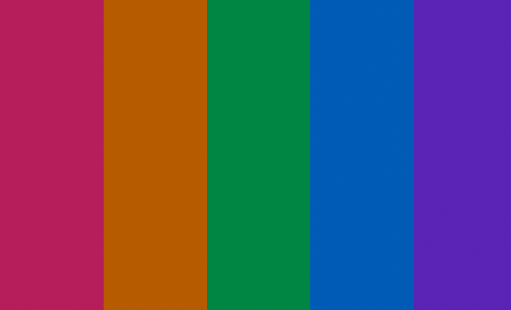
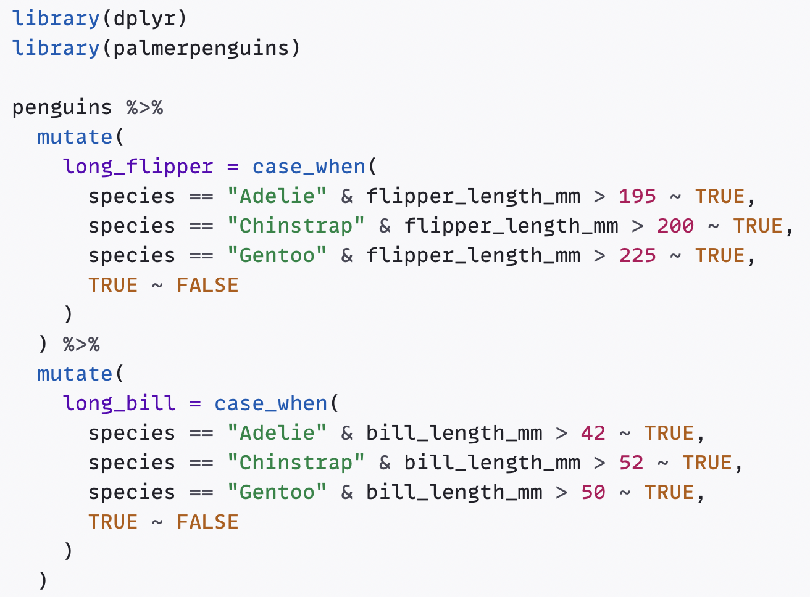
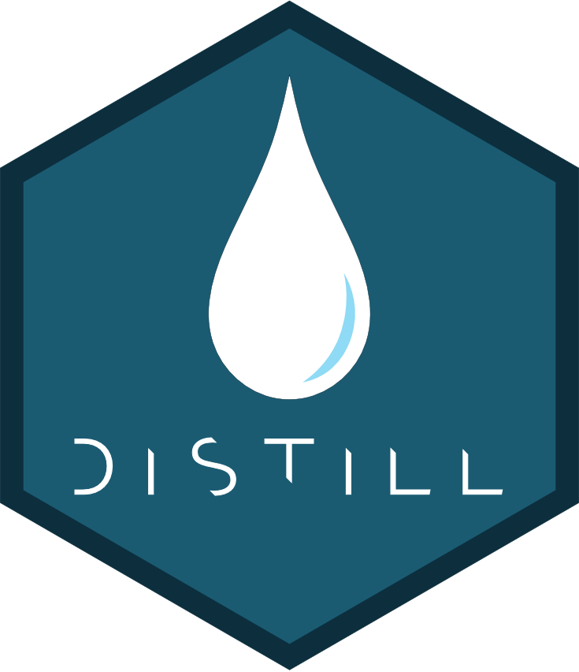

Présentation, prise en main, en passant par le processus d’installation.
Resources I found inspiring and useful when building my new site, plus notes on my customisations

How to create an appealing and accessible colour palette for a syntax highlighting scheme

A guide to modifying the default {distill} syntax highlighting theme, including colour choice considerations, and its implementation in {distilltools}

Resources and sites I found inspiring when building my new site, and a sneak-peek at {distilltools}, an exciting new project for {distill} users
My attempts at Advent of Code, 2020
n_letter_words
How I created a handy function and a personal package